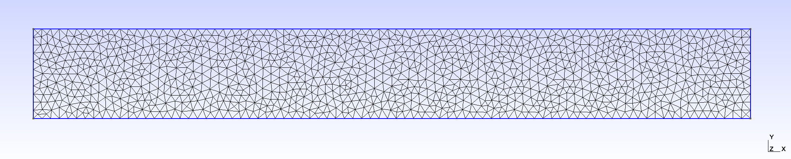
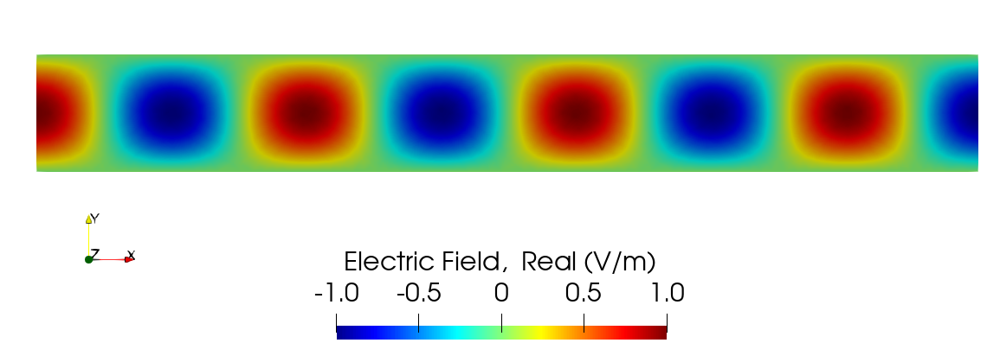
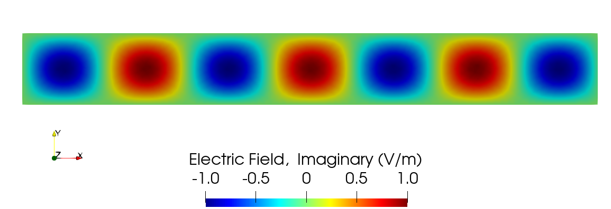
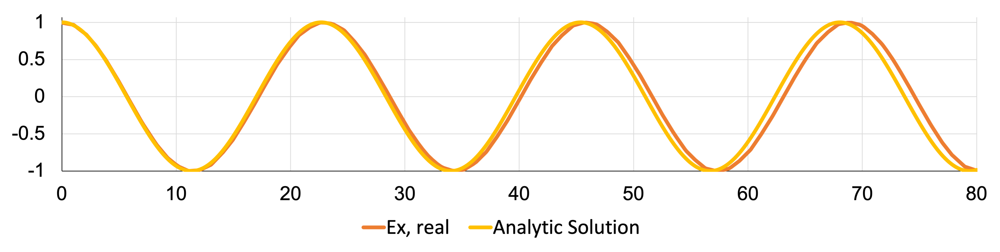
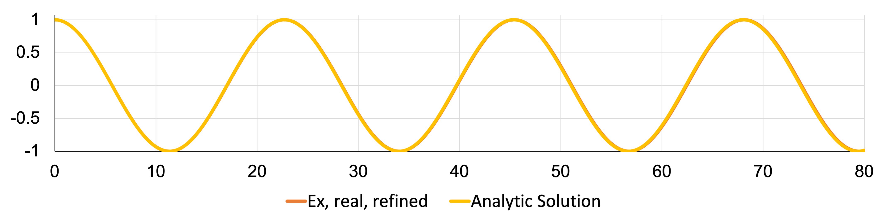
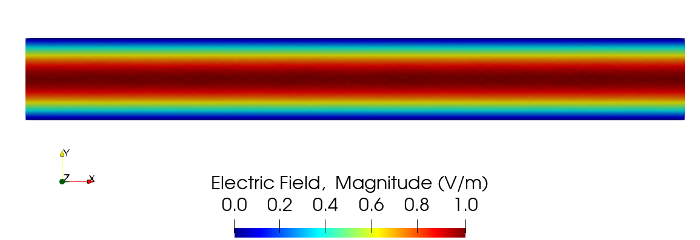

Waveguide Transmission Benchmark
This section summarizes and describes the single frequency two-dimensional waveguide benchmark and verification test for the electromagnetics module.
Model Geometry
In this scenario, the geometry is a vacuum-filled waveguide of length and width , as shown in Figure 1. In this waveguide, an electromagnetic plane wave representing the TM11 mode travels from the left entry port (x = 0) to the right exit port (x = L). Parameters for this scenario are shown in Table 1.
Figure 1: Two-dimensional vacuum-filled waveguide geometry, with an incoming plane wave at left and exiting at right.
Table 1: Model parameters for the waveguide benchmark study.
| Parameter (unit) | Value(s) |
|---|---|
| Waveguide length, (m) | 80 |
| Waveguide width, (m) | 10 |
| Operating frequency, (MHz) | 20 |
| Vacuum electric permittivity, (F/m) | |
| Vacuum magnetic permeability, (H/m) |
Governing Equations and Boundary Conditions
In this simulation, both the real and imaginary components of the electric field wave will be simulated separately, but the frequency-domain electric field wave equation in general is given by:
where
is the complex electric field vector in V/m,
is the vacuum magnetic permeability of the medium in H/m,
is the electric permittivity of the medium in F/m, and
is the operating frequency in rad/s.
Harrington in (Harrington, 1961) showed that the transverse electric field distributions could be determined from the component in the direction of wave travel, so only the scalar component will need to be modeled for comparison. Further, because the real and imaginary components of the field are 90 out of phase with each other, verifying both the form of the real component and the phase shift should be adequate to check for proper performance.
Given Gauss's Law with an absence of charge density (as the waveguide is filled with vacuum), a standard diffusion-reaction style equation (without a source) is the final form of the equation being modeled, with the Diffusion and MatReaction objects being used for each real and imaginary component.
With respect to boundary conditions, is set to zero on the waveguide walls, to satisfy the perfect electrical conductor boundary condition for this case. For the entry port, the EMRobinBC object will be used in a "port" configuration, while the exit port will be set in an "absorbing" configuration. The incoming wave shape across the waveguide port needed by EMRobinBC will be set to
Analytic Solution for Comparison
In order to perform a quantitative comparison, the instantaneous field expressions for a rectangular waveguide are needed. Cheng provided real field component expressions for the TM11 mode in a three-dimensional rectangular waveguide in (Cheng, 1989), and the component is as follows for this scenario:
where
(or just for a 2-D case),
is the propagation constant of the wave,
is the free space wavenumber, with being the speed of light,
is the operating frequency in rad/s,
is the peak electric field amplitude,
is the width of the waveguide in the direction, and
is the width of the waveguide in the direction.
Because our two-dimensional case is effectively infinite into and out of the page, the factor can be removed to render the analytic function for this verification.
Mesh
The mesh used in this study was created in Gmsh, using a top-down view of the geometry shown above in Figure 1. The .geo file used to create this mesh is shown at the end of this section. To reproduce the content of the corresponding .msh file (waveguide.msh) in a terminal, ensure that gmsh is installed and available in the system PATH and simply run the following command at the location of waveguide.geo
gmsh -2 waveguide.geo -clscale 0.12 -order 1 -algo del2d
As of Gmsh 4.6.0, this command produces a first order 2D mesh with an element size factor of 0.12 using a Delaunay algorithm. The unstructured, triangular mesh contains 1202 nodes and 2806 elements. An image of the result is shown in Figure 2.

Figure 2: Mesh used in the waveguide transmission benchmark study.
Mesh File
// Use global scaling factor = 0.12 to duplicate current saved MSH file.
width = 10;
length = 80;
Point(1) = {0, 0, 0};
Point(2) = {length, 0, 0};
Point(3) = {length, width, 0};
Point(4) = {0, width, 0};
Line(1) = {1, 2};
Line(2) = {2, 3};
Line(3) = {3, 4};
Line(4) = {4, 1};
Line Loop(5) = {1, 2, 3, 4};
Plane Surface(6) = {5};
Physical Line("bottom") = {1};
Physical Line("exit") = {2};
Physical Line("top") = {3};
Physical Line("port") = {4};
Physical Surface(7) = {6};
Input File
# Test for EMRobinBC in port and absorbing modes with simple electric plane wave
# 2D, vacuum-filled waveguide with conducting walls
# u^2 + k^2*u = 0, 0 < x < 80, 0 < y < 10, u: R -> C
# k = 2*pi*freq/c, freq = 20e6 Hz, c = 3e8 m/s
[Mesh<<<{"href": "../../../syntax/Mesh/index.html"}>>>]
[fmg]
type = FileMeshGenerator<<<{"description": "Read a mesh from a file.", "href": "../../../source/meshgenerators/FileMeshGenerator.html"}>>>
file<<<{"description": "The filename to read."}>>> = waveguide.msh
[]
[]
[Variables<<<{"href": "../../../syntax/Variables/index.html"}>>>]
[E_real]
order<<<{"description": "Specifies the order of the FE shape function to use for this variable (additional orders not listed are allowed)"}>>> = FIRST
family<<<{"description": "Specifies the family of FE shape functions to use for this variable"}>>> = LAGRANGE
[]
[E_imag]
order<<<{"description": "Specifies the order of the FE shape function to use for this variable (additional orders not listed are allowed)"}>>> = FIRST
family<<<{"description": "Specifies the family of FE shape functions to use for this variable"}>>> = LAGRANGE
[]
[]
[Functions<<<{"href": "../../../syntax/Functions/index.html"}>>>]
[inc_y]
type = ParsedFunction<<<{"description": "Function created by parsing a string", "href": "../../../source/functions/MooseParsedFunction.html"}>>>
expression<<<{"description": "The user defined function."}>>> = 'sin(pi * y / 10)'
[]
[]
[Kernels<<<{"href": "../../../syntax/Kernels/index.html"}>>>]
[diffusion_real]
type = Diffusion<<<{"description": "The Laplacian operator ($-\\nabla \\cdot \\nabla u$), with the weak form of $(\\nabla \\phi_i, \\nabla u_h)$.", "href": "../../../source/kernels/Diffusion.html"}>>>
variable<<<{"description": "The name of the variable that this residual object operates on"}>>> = E_real
[]
[coeffField_real]
type = ADMatReaction<<<{"description": "Kernel to add -L*v, where L=reaction rate, v=variable", "href": "../../../source/kernels/MatReaction.html"}>>>
reaction_rate<<<{"description": "The reaction rate used with the kernel"}>>> = kSquared
variable<<<{"description": "The name of the variable that this residual object operates on"}>>> = E_real
[]
[diffusion_imaginary]
type = Diffusion<<<{"description": "The Laplacian operator ($-\\nabla \\cdot \\nabla u$), with the weak form of $(\\nabla \\phi_i, \\nabla u_h)$.", "href": "../../../source/kernels/Diffusion.html"}>>>
variable<<<{"description": "The name of the variable that this residual object operates on"}>>> = E_imag
[]
[coeffField_imaginary]
type = ADMatReaction<<<{"description": "Kernel to add -L*v, where L=reaction rate, v=variable", "href": "../../../source/kernels/MatReaction.html"}>>>
reaction_rate<<<{"description": "The reaction rate used with the kernel"}>>> = kSquared
variable<<<{"description": "The name of the variable that this residual object operates on"}>>> = E_imag
[]
[]
[BCs<<<{"href": "../../../syntax/BCs/index.html"}>>>]
[top_real]
type = DirichletBC<<<{"description": "Imposes the essential boundary condition $u=g$, where $g$ is a constant, controllable value.", "href": "../../../source/bcs/DirichletBC.html"}>>>
value<<<{"description": "Value of the BC"}>>> = 0
variable<<<{"description": "The name of the variable that this residual object operates on"}>>> = E_real
boundary<<<{"description": "The list of boundary IDs from the mesh where this object applies"}>>> = top
[]
[bottom_real]
type = DirichletBC<<<{"description": "Imposes the essential boundary condition $u=g$, where $g$ is a constant, controllable value.", "href": "../../../source/bcs/DirichletBC.html"}>>>
value<<<{"description": "Value of the BC"}>>> = 0
variable<<<{"description": "The name of the variable that this residual object operates on"}>>> = E_real
boundary<<<{"description": "The list of boundary IDs from the mesh where this object applies"}>>> = bottom
[]
[port_real]
type = EMRobinBC<<<{"description": "First order Robin-style Absorbing/Port BC for scalar variables, assuming plane waves.", "href": "../../../source/bcs/EMRobinBC.html"}>>>
coeff_real<<<{"description": "Constant coefficient, real component."}>>> = -0.27706242940220277 # -sqrt(k^2 - (pi/10)^2)
sign<<<{"description": "Sign of boundary term in weak form."}>>> = positive
profile_func_real<<<{"description": "Function coefficient, real component."}>>> = inc_y
profile_func_imag<<<{"description": "Function coefficient, imaginary component."}>>> = 0
field_real<<<{"description": "Real component of field."}>>> = E_real
field_imaginary<<<{"description": "Imaginary component of field."}>>> = E_imag
variable<<<{"description": "The name of the variable that this residual object operates on"}>>> = E_real
component<<<{"description": "Real or Imaginary wave component."}>>> = real
mode<<<{"description": "Mode of operation for EMRobinBC. Can be set to 'absorbing' or 'port' (default: 'port')."}>>> = port
boundary<<<{"description": "The list of boundary IDs from the mesh where this object applies"}>>> = port
[]
[exit_real]
type = EMRobinBC<<<{"description": "First order Robin-style Absorbing/Port BC for scalar variables, assuming plane waves.", "href": "../../../source/bcs/EMRobinBC.html"}>>>
coeff_real<<<{"description": "Constant coefficient, real component."}>>> = 0.27706242940220277
sign<<<{"description": "Sign of boundary term in weak form."}>>> = negative
field_real<<<{"description": "Real component of field."}>>> = E_real
field_imaginary<<<{"description": "Imaginary component of field."}>>> = E_imag
variable<<<{"description": "The name of the variable that this residual object operates on"}>>> = E_real
component<<<{"description": "Real or Imaginary wave component."}>>> = real
mode<<<{"description": "Mode of operation for EMRobinBC. Can be set to 'absorbing' or 'port' (default: 'port')."}>>> = absorbing
boundary<<<{"description": "The list of boundary IDs from the mesh where this object applies"}>>> = exit
[]
[top_imaginary]
type = DirichletBC<<<{"description": "Imposes the essential boundary condition $u=g$, where $g$ is a constant, controllable value.", "href": "../../../source/bcs/DirichletBC.html"}>>>
value<<<{"description": "Value of the BC"}>>> = 0
variable<<<{"description": "The name of the variable that this residual object operates on"}>>> = E_imag
boundary<<<{"description": "The list of boundary IDs from the mesh where this object applies"}>>> = top
[]
[bottom_imaginary]
type = DirichletBC<<<{"description": "Imposes the essential boundary condition $u=g$, where $g$ is a constant, controllable value.", "href": "../../../source/bcs/DirichletBC.html"}>>>
value<<<{"description": "Value of the BC"}>>> = 0
variable<<<{"description": "The name of the variable that this residual object operates on"}>>> = E_imag
boundary<<<{"description": "The list of boundary IDs from the mesh where this object applies"}>>> = bottom
[]
[port_imaginary]
type = EMRobinBC<<<{"description": "First order Robin-style Absorbing/Port BC for scalar variables, assuming plane waves.", "href": "../../../source/bcs/EMRobinBC.html"}>>>
coeff_real<<<{"description": "Constant coefficient, real component."}>>> = -0.27706242940220277
sign<<<{"description": "Sign of boundary term in weak form."}>>> = positive
profile_func_real<<<{"description": "Function coefficient, real component."}>>> = inc_y
profile_func_imag<<<{"description": "Function coefficient, imaginary component."}>>> = 0
field_real<<<{"description": "Real component of field."}>>> = E_real
field_imaginary<<<{"description": "Imaginary component of field."}>>> = E_imag
variable<<<{"description": "The name of the variable that this residual object operates on"}>>> = E_imag
component<<<{"description": "Real or Imaginary wave component."}>>> = imaginary
mode<<<{"description": "Mode of operation for EMRobinBC. Can be set to 'absorbing' or 'port' (default: 'port')."}>>> = port
boundary<<<{"description": "The list of boundary IDs from the mesh where this object applies"}>>> = port
[]
[exit_imaginary]
type = EMRobinBC<<<{"description": "First order Robin-style Absorbing/Port BC for scalar variables, assuming plane waves.", "href": "../../../source/bcs/EMRobinBC.html"}>>>
coeff_real<<<{"description": "Constant coefficient, real component."}>>> = 0.27706242940220277
sign<<<{"description": "Sign of boundary term in weak form."}>>> = negative
field_real<<<{"description": "Real component of field."}>>> = E_real
field_imaginary<<<{"description": "Imaginary component of field."}>>> = E_imag
variable<<<{"description": "The name of the variable that this residual object operates on"}>>> = E_imag
component<<<{"description": "Real or Imaginary wave component."}>>> = imaginary
mode<<<{"description": "Mode of operation for EMRobinBC. Can be set to 'absorbing' or 'port' (default: 'port')."}>>> = absorbing
boundary<<<{"description": "The list of boundary IDs from the mesh where this object applies"}>>> = exit
[]
[]
[Materials<<<{"href": "../../../syntax/Materials/index.html"}>>>]
[kSquared]
type = ADParsedMaterial<<<{"description": "Parsed expression Material.", "href": "../../../source/materials/ParsedMaterial.html"}>>>
property_name<<<{"description": "Name of the parsed material property"}>>> = kSquared
expression<<<{"description": "Parsed function (see FParser) expression for the parsed material"}>>> = '0.4188790204786391^2'
[]
[]
[Executioner<<<{"href": "../../../syntax/Executioner/index.html"}>>>]
type = Steady
solve_type = 'PJFNK'
petsc_options_iname = '-pc_type'
petsc_options_value = 'lu'
[]
[Outputs<<<{"href": "../../../syntax/Outputs/index.html"}>>>]
exodus<<<{"description": "Output the results using the default settings for Exodus output."}>>> = true
print_linear_residuals<<<{"description": "Enable printing of linear residuals to the screen (Console)"}>>> = true
[]Results and Discussion
The field result for this simulation (real and imaginary components) is shown in Figure 3 and Figure 4.

Figure 3: Electric field result, (real component), of the 2-D waveguide verification case.

Figure 4: Electric field result, (imaginary component), of the 2-D waveguide verification case.
A comparison of the real component results to compared to that in Eq. (1) is shown in Figure 5. This data is taken down the centerline of the waveguide geometry (). There is decent agreement between the two solutions, but note the increasing phase error along the length of the waveguide. This is known as "numerical dispersion" or "numerical phase error" in the literature, and is a byproduct of the numerical discretization, where the velocity of the calculated wave differs from that of the exact velocity due to lower resolution. Jin as well as Warren and Scott showed that the use of higher order elements as well as smaller elements can help mitigate this effect. (Jin, 2014; Jin, 2010; Warren and Jr., 1996) Further, Warren and Scott later showed that the orientation of the elements in the mesh for a triangular mesh, as used here, had a notable impact on the calculated phase error. (Warren and Jr., 1995) Since the error accumulates in the direction of wave travel, alternating the direction of the triangular elements in a hexagonal configuration had the lowest phase error in a TM1 mode simulation. Interestingly, randomizing the triangular element direction did not have the same impact (though did achieve lower phase error overall). A recalculation of this result using a finer mesh is shown in Figure 6, and shows that the refined (18,102 elements compared to 2,219 in the original), simulated result is almost exactly in alignment with the analytic solution.

Figure 5: Comparison of the real electric field result with the analytic solution in the 2-D waveguide verification case.

Figure 6: Comparison of the real electric field result with the analytic solution in the 2-D waveguide verification case, with a refined mesh.
Finally to confirm the proper resolution of the phase between real and imaginary components (and to show that the port and absorbing boundary conditions have little reflection), a plot of the magnitude of the electric field is shown below in Figure 7. If the components are 90 out-of-phase with each other, then the magnitude of the field should be a profile, extending the length of the waveguide. Indeed, Figure 7 confirms that this is the case.

Figure 7: Electric field result for the magnitude of in the 2-D waveguide verification case, confirming that the real and imaginary components are in the proper phase relative to each other.
References
- David K. Cheng.
Field and Wave Electromagnetics.
Addison-Wesley, Reading, MA, USA, 2nd ed edition, 1989.[Export]
- Roger F. Harrington.
Time-Harmonic Electromagnetic Fields.
McGraw-Hill, New York, 1961.[Export]
- Jian-Ming Jin.
Theory and Computation of Electromagnetic Fields.
John Wiley & Sons, Hoboken, New Jersey, USA, 1st edition, 2010.[Export]
- Jian-Ming Jin.
The Finite Element Method in Electromagnetics.
John Wiley & Sons, Hoboken, New Jersey, USA, 3rd edition, 2014.[Export]
- Gregory S. Warren and Waymond R. Scott Jr.
Numerical dispersion in the finite-element method using triangular edge elements.
Microwave and Optical Technology Letters, 9:315–319, 1995.
doi:10.1002/mop.4650090606.[Export]
- Gregory S. Warren and Waymond R. Scott Jr.
Numerical dispersion of higher-order nodal elements in the finite element method.
IEEE Trans. Antennas Propagat., 44:317–320, 1996.
doi:10.1109/8.486299.[Export]